Yandex.Uchebnik
Increasing landing page conversion rate
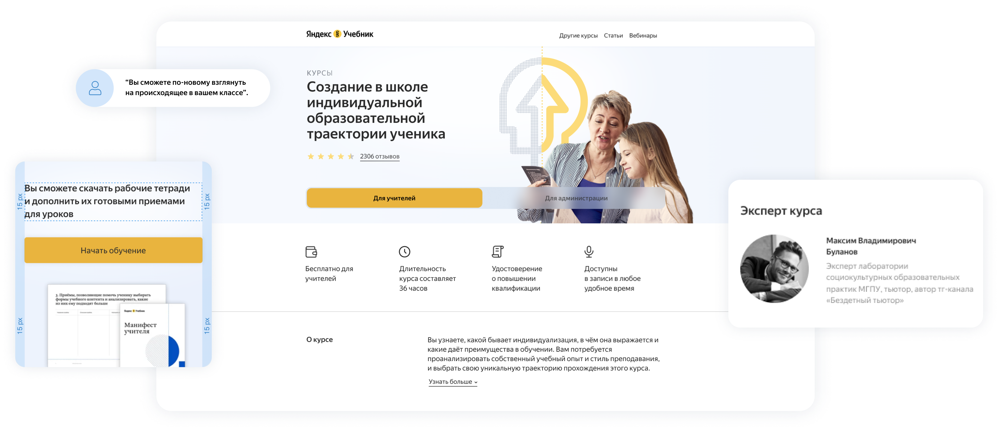
Overview
Yandex.Uchebnik is a digital education platform which offers school teachers effective tools of teaching online as well as growing as a professional. My task was to do an audit of one of their courses landing page to improve conversions and redesign it accordingly. I also had to take into account the brand guidelines with its established use of typefaces and imagery.
My role
- UX Research
- Landing Redesign
Year
- 2022
Tags
- web design
- 2022
UX Research
In order to better inform my design decisions I conducted a competitive audit and interviewed several teachers, some of whom had difficulties using modern technologies.
Hypothesis 1
The users find the CTA buttons on the first screen (1) misleading. They think that they will start studying the course if they click on one of the buttons, but instead the buttons lead to a very long course description, which makes the mobile experience of this landing page especially not user friendly:
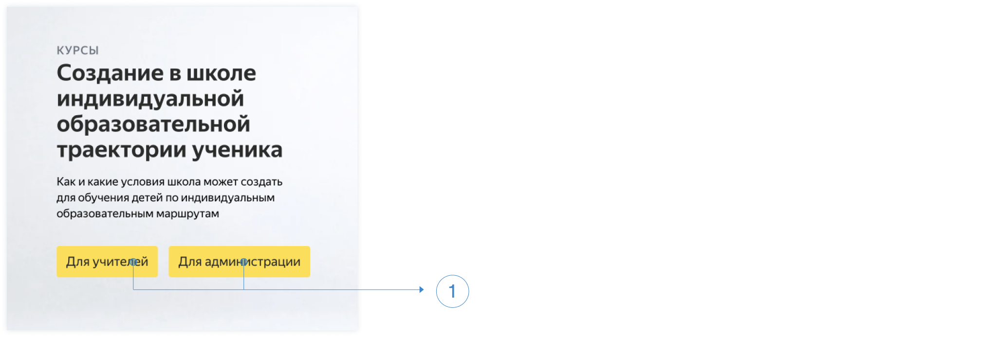
I decided to replace the buttons with a more familiar to mobile users Tab Control (2) which made the landing page twice shorter:
For users who are not familiar with tab control functionality, I added the button switching to a proper course (3) at the end of the description section.
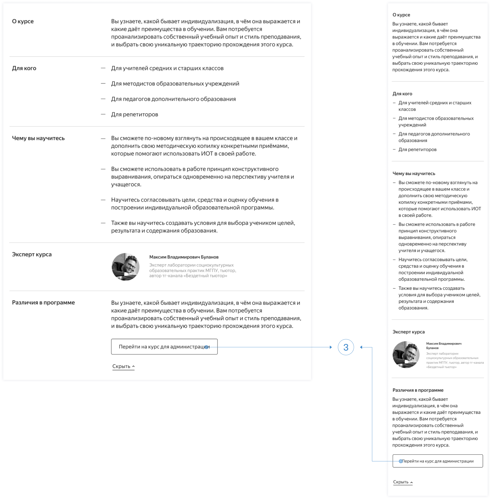
Hypothesis 2
Users doubt the practical value of this course as:
- It’s free;
- The individual educational trajectory sounds good in theory, but is barely useful in Russian education reality.
In order to attract more users I decided to make the first screen most informative. Thus, they can better understand what this course is about and its value from the start.
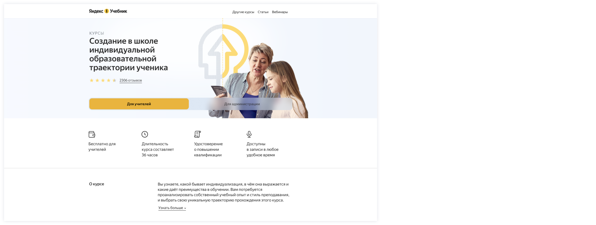
I removed the short description after the main header as it doesn’t provide users with a clear understanding of the course material. ‘About’ section (1) expands with an accordion element. The course program is introduced in the video format (2) now, which makes the overview more clear and visually appealing. User rating (3) and user reviews (4) show the real value of this course and how the education process changes with its practical implementation.
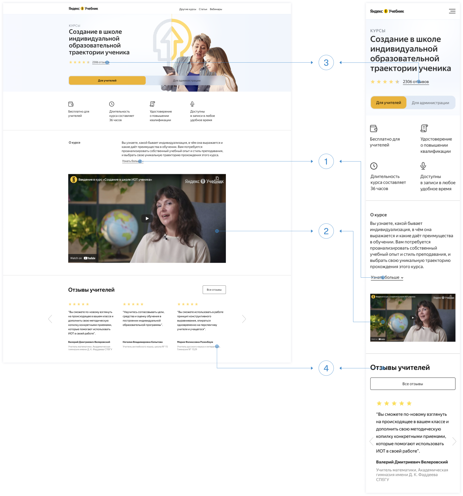
Right after the user reviews there is a section with a CTA ‘Start learning’ which I modified slightly only in mobile version (5):
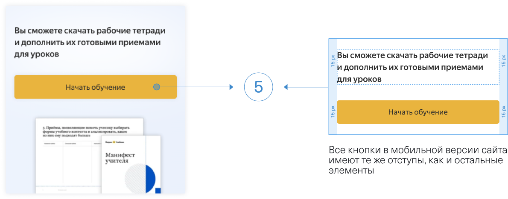
In current desktop version ‘Articles related to the course’ section is divided in 4 columns with very small gutters, which makes reading the article titles illegible. The 3 column layout solves this problem:
I think that every landing should tell a story of company’s values and goals. That’s why I added the description of Yandex.Uchebnik mission in ‘Share content’ section:
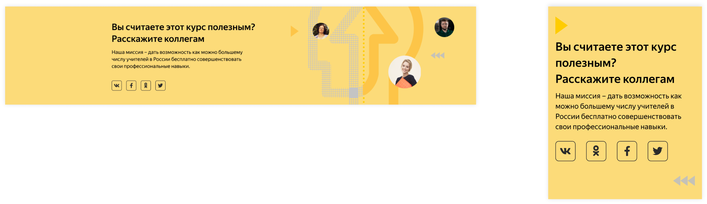
The last sections (‘Other courses’, ’Subscription’ and footer) remained unchanged, except for the “All courses” button in the “Other courses” section. Significantly reduced length of the page increased the probability that more users will view these sections. Those users who still have questions about the course will see the phone and email support in the footer section. All these changes will potentially lead to an increase in conversions.
Hypothesis 3
Refresher courses always consume a lot of time, which means a complete schedule overhaul.
Since the time factor is very important in deciding whether to take a course or not, instead of the "Useful checklists and materials" icon, I added the "Course duration" icon on the first screen. Cost and duration (1) are first on the list. In the mobile version, I changed the layout, which made the data presented on screen visually more attractive:
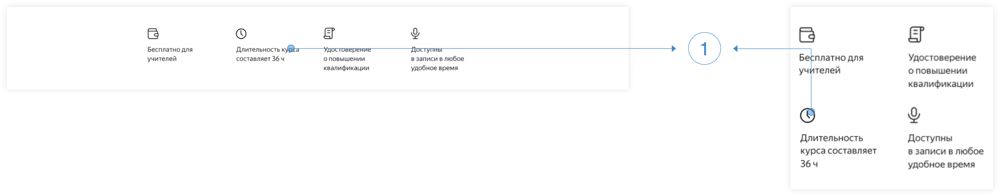
The information about a flexible course schedule and access to records at any time is also mentioned in a video course introduction and user reviews.
Landing Page Prototype
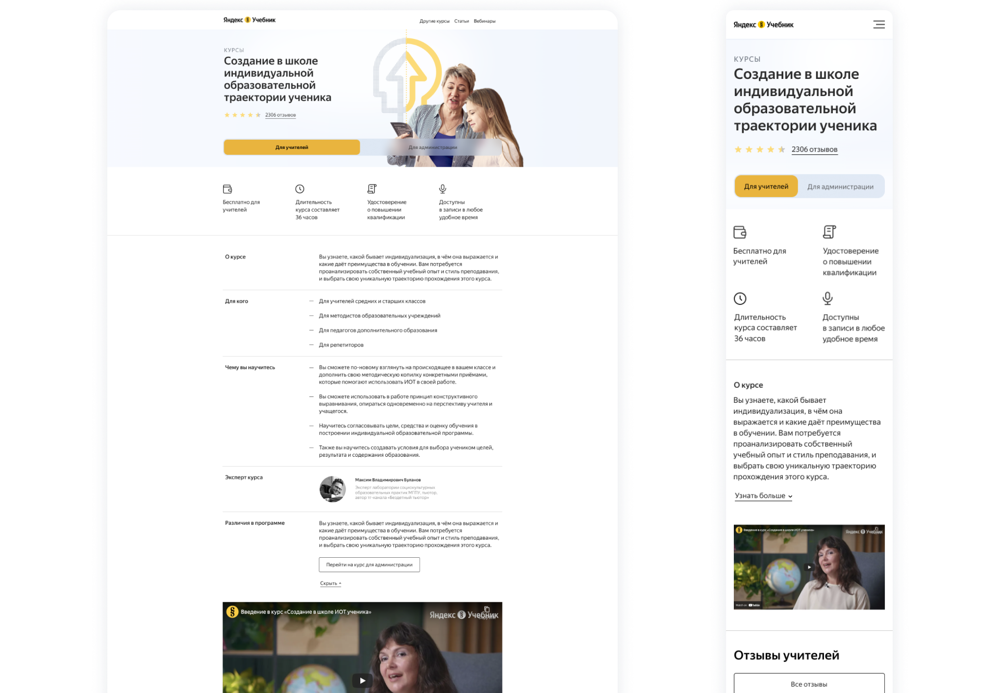
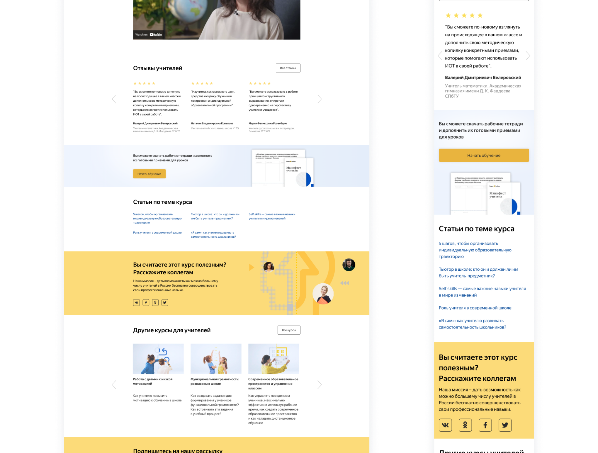
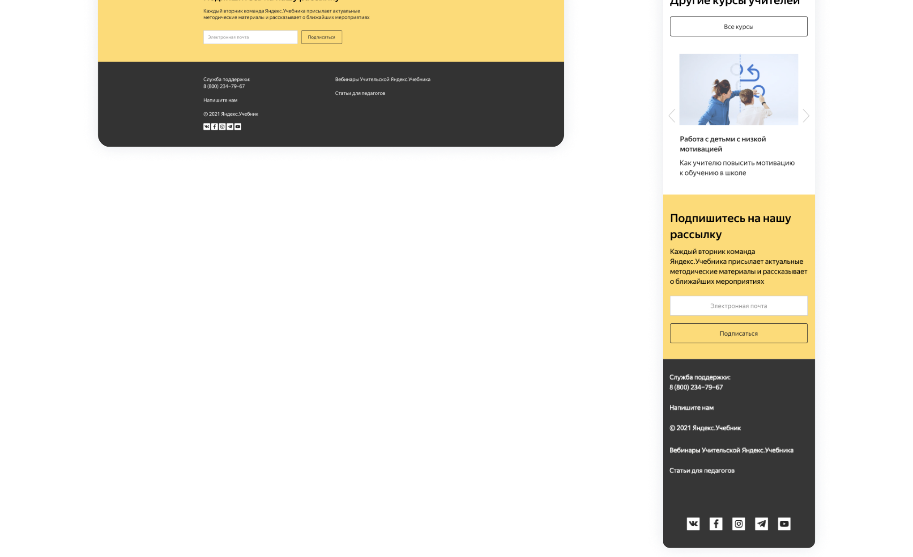